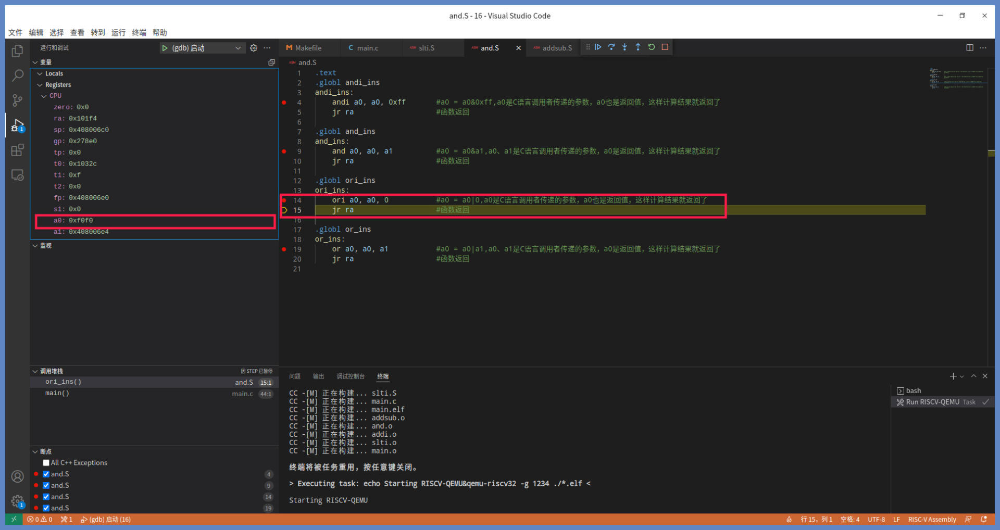
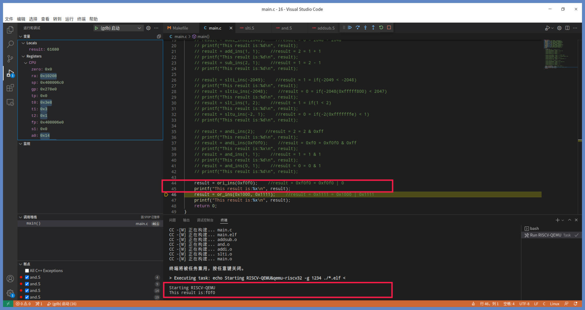
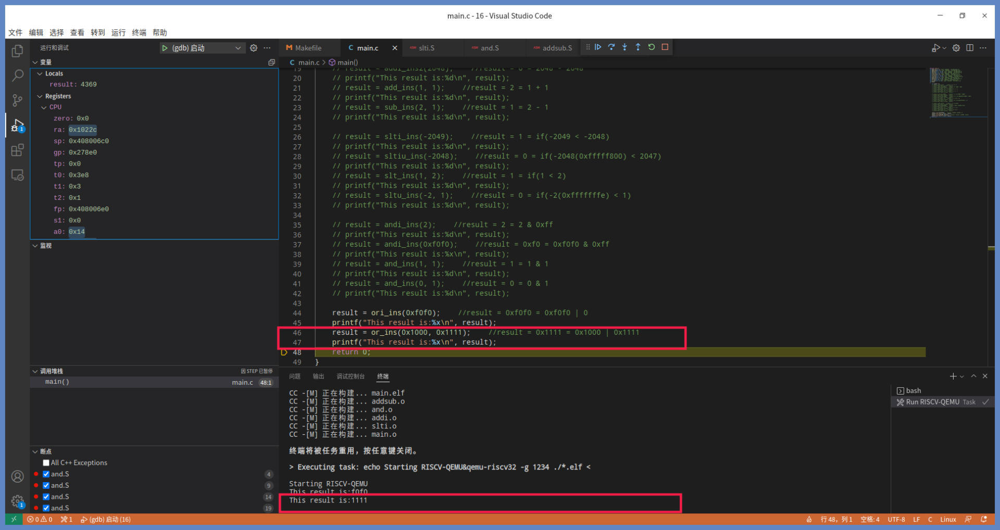
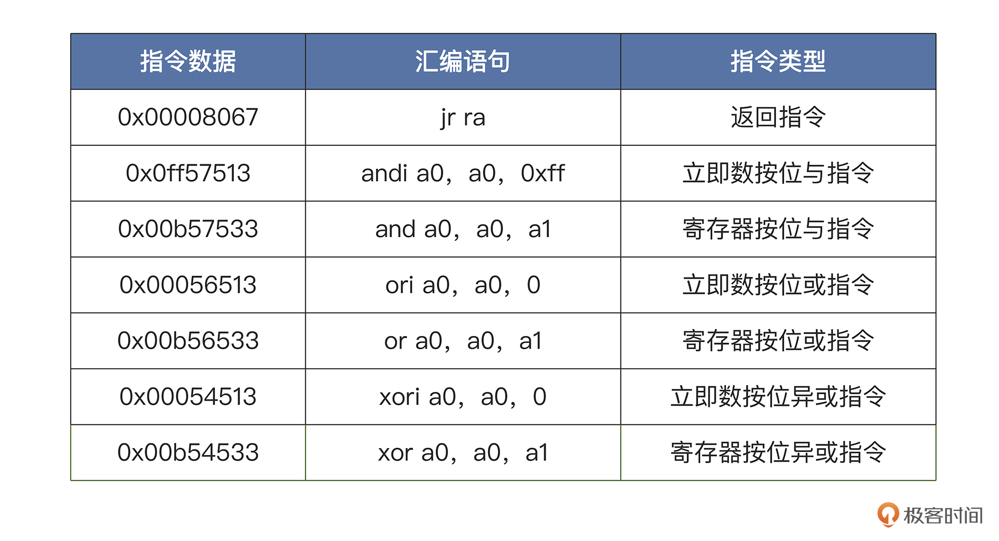
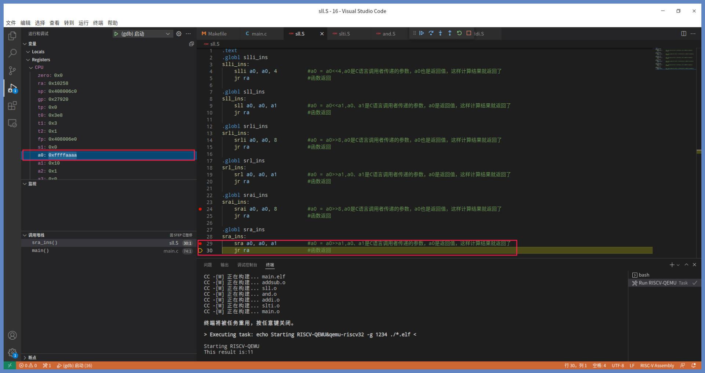
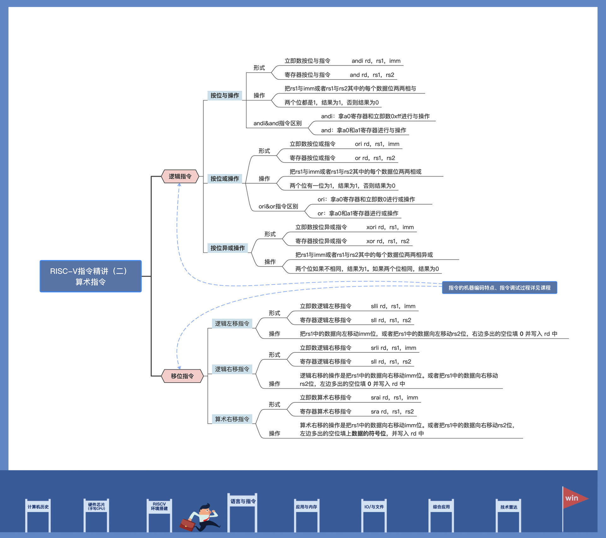

- 00 开篇词 练好基本功，优秀工程师成长第一步.md
- 01 CISC & RISC：从何而来，何至于此.md
- 02 RISC特性与发展：RISC-V凭什么成为“半导体行业的Linux”？.md
- 03 硬件语言筑基（一）：从硬件语言开启手写CPU之旅.md
- 04 硬件语言筑基（二）_ 代码是怎么生成具体电路的？.md
- 05 指令架构：RISC-V在CPU设计上到底有哪些优势？.md
- 06 手写CPU（一）：迷你CPU架构设计与取指令实现.md
- 07 手写CPU（二）：如何实现指令译码模块？.md
- 08 手写CPU（三）：如何实现指令执行模块？.md
- 09 手写CPU（四）：如何实现CPU流水线的访存阶段？.md
- 10 手写CPU（五）：CPU流水线的写回模块如何实现？.md
- 11 手写CPU（六）：如何让我们的CPU跑起来？.md
- 12 QEMU：支持RISC-V的QEMU如何构建？.md
- 13 小试牛刀：跑通RISC-V平台的Hello World程序.md
- 14 走进C语言：高级语言怎样抽象执行逻辑？.md
- 15 C与汇编：揭秘C语言编译器的“搬砖”日常.md
- 16 RISC-V指令精讲（一）：算术指令实现与调试.md
- 17 RISC-V指令精讲（二）：算术指令实现与调试.md
- 18 RISC-V指令精讲（三）：跳转指令实现与调试.md
- 19 RISC-V指令精讲（四）：跳转指令实现与调试.md
- 20 RISC-V指令精讲（五）：原子指令实现与调试.md
- 21 RISC-V指令精讲（六）：加载指令实现与调试.md
- 22 RISC-V指令精讲（七）：访存指令实现与调试.md
- 23 内存地址空间：程序中地址的三种产生方式.md
- 24 虚实结合：虚拟内存和物理内存.md
- 25 堆&栈：堆与栈的区别和应用.md
- 26 延迟分配：提高内存利用率的三种机制.md
- 27 应用内存管理：Linux的应用与内存管理.md
- 28 进程调度：应用为什么能并行执行？.md
- 29 应用间通信（一）：详解Linux进程IPC.md
- 30 应用间通信（二）：详解Linux进程IPC.md
- 31 外设通信：IO Cache与IO调度.md
- 32 IO管理：Linux如何管理多个外设？.md
- 33 lotop与lostat命令：聊聊命令背后的故事与工作原理.md
- 34 文件仓库：初识文件与文件系统.md
- 35 Linux文件系统（一）：Linux如何存放文件？.md
- 36 Linux文件系统（二）：Linux如何存放文件？.md
- 37 浏览器原理（一）：浏览器为什么要用多进程模型？.md
- 38 浏览器原理（二）：浏览器进程通信与网络渲染详解.md
- 39 源码解读：V8 执行 JS 代码的全过程.md
- 40 内功心法（一）：内核和后端通用的设计思想有哪些？.md
- 41 内功心法（二）：内核和后端通用的设计思想有哪些？.md
- 42 性能调优：性能调优工具eBPF和调优方法.md
- 先睹为快：迷你CPU项目效果演示.md
- 加餐01 云计算基础：自己动手搭建一款IAAS虚拟化平台.md
- 加餐02 学习攻略（一）：大数据&云计算，究竟怎么学？.md
- 加餐03 学习攻略（二）：大数据&云计算，究竟怎么学？.md
- 加餐04 谈谈容器云与和CaaS平台.md
- 加餐05 分布式微服务与智能SaaS.md
- 国庆策划01 知识挑战赛：检验一下学习成果吧！.md
- 国庆策划02 来自课代表的学习锦囊.md
- 国庆策划03 揭秘代码优化操作和栈保护机制.md
- 温故知新 思考题参考答案（一）.md
- 用户故事 我是怎样学习Verilog的？.md
- 结束语 心若有所向往，何惧道阻且长.md
17 RISC-V指令精讲（二）：算术指令实现与调试
你好，我是LMOS。
上节课，我们学习了算术指令中的加减指令和比较指令。不过一个CPU只能实现这两类指令还不够。如果你学过C语言，应该对“<<、>>、&、|、!”这些运算符并不陌生，这些运算符都需要CPU提供逻辑和移位指令才可以实现。
今天我们就继续学习逻辑指令（and、or、xor）和移位指令 （sll、srl、sra）。代码你可以从这里下载。话不多说，我们开始吧。
逻辑指令
从CPU芯片电路角度来看，其实CPU更擅长执行逻辑操作，如与、或、异或。至于为什么，你可以看看CPU的基础门电路。
RISC-V指令集中包含了三种逻辑指令，这些指令又分为立即数版本和寄存器版本，分别是andi、and、ori、or、xori、xor这六条指令。我们学习这些指令的方法和上节课类似，也涉及到写代码验证调试的部分。
按位与操作：andi、and指令
首先我们来学习一下andi、and指令，它们的形式如下所示：
andi rd，rs1，imm
#andi 立即数按位与指令
#rd 目标寄存器
#rs1 源寄存器1
#imm 立即数
and rd，rs1，rs2
#and 寄存器按位与指令
#rd 目标寄存器
#rs1 源寄存器1
#rs2 源寄存器2
上述代码中rd、rs1、rs2可以是任何通用寄存器，imm是立即数。
andi、and这两个指令完成的操作，我们用伪代码描述如下：
//andi
rd = rs1 & imm
//and
rd = rs1 & rs2
按位与的操作，就是把rs1与imm或者rs1与rs2其中的每个数据位两两相与。两个位都是1，结果为1，否则结果为0。
下面我们在工程目录下建立一个and.S文件，写代码验证一下这两个指令，如下所示：
.globl andi_ins
andi_ins:
andi a0，a0，0xff #a0 = a0&0xff，a0是C语言调用者传递的参数，a0也是返回值，这样计算结果就返回了
jr ra #函数返回
.globl and_ins
and_ins:
and a0，a0，a1 #a0 = a0&a1，a0、a1是C语言调用者传递的参数，a0是返回值，这样计算结果就返回了
jr ra #函数返回
这里我们已经写好了andi_ins与and_ins函数，分别去执行andi和and指令。
andi指令是拿a0寄存器和立即数0xff进行与操作。由于立即数是0xff，所以总是返回a0的低8位数据；and指令则是拿a0和a1寄存器进行与操作，再把结果写入到a0寄存器。
下面我们用VSCode打开工程按下“F5”调试一下，如下所示：
上图中是执行完andi a0，a0，0xff指令之后，执行jr ra指令之前的状态。可以看到，a0寄存器中的值确实已经变成2了，这说明运算的结果是符合预期的。
andi_ins函数返回后，输出的结果如下图所示：

因为2的二进制数据是（0b00000000000000000000000000000010）与上0xff的二进制数据是（0b00000000000000000000000011111111）结果确实是2，所以返回2，结果是正确的。
接下来，我们对and_ins函数进行调试。

上图展示的是执行完and a0，a0，a1指令之后，执行jr ra指令之前的状态。我们看到a0寄存器中的值已经变成了1，这说明运算的结果是正确的。
and_ins函数返回后，输出的结果如下图所示：

上图中因为1的二进制数据是（0b00000000000000000000000000000001）与上1的二进制数据是（0b00000000000000000000000000000001）确实是1，所以返回1，结果完全正确。
按位或操作：ori、or指令
按位与操作说完了，我们接着来学习一下或指令ori、or，它们的形式如下：
ori rd，rs1，imm
#ori 立即数按位或指令
#rd 目标寄存器
#rs1 源寄存器1
#imm 立即数
or rd，rs1，rs2
#or 寄存器按位或指令
#rd 目标寄存器
#rs1 源寄存器1
#rs2 源寄存器2
同样地，上述代码中rd、rs1、rs2可以是任何通用寄存器，imm表示立即数。
我们还是从伪代码的描述入手，看看ori、or完成的操作。
//ori
rd = rs1 | imm
//or
rd = rs1 | rs2
按位或的操作就是把rs1与imm或者rs1与rs2其中的每个数据位两两相或，两个位有一位为1，结果为1，否则结果为0。
我们在and.S文件中写写代码，做个验证，如下所示：
.globl ori_ins
ori_ins:
ori a0，a0，0 #a0 = a0|0，a0是C语言调用者传递的参数，a0也是返回值，这样计算结果就返回了
jr ra #函数返回
.globl or_ins
or_ins:
or a0，a0，a1 #a0 = a0|a1，a0、a1是C语言调用者传递的参数，a0是返回值，这样计算结果就返回了
jr ra #函数返回
上述代码中ori_ins与or_ins函数，分别执行了ori和or指令。
ori指令是拿a0寄存器和立即数0进行或操作，由于立即数是0，所以总是返回a0原本的数据；or指令是拿a0和a1寄存器进行或操作，再把结果写入到a0寄存器。
我们还是到VSCode里，按下“F5”调试一下，如下所示：

上图中是执行完ori a0，a0，0指令之后，执行jr ra指令之前的状态。如果a0寄存器中的值确实已经变成0xf0f0了，就说明运算的结果正确。
ori_ins函数返回后，输出的结果如下图所示：

因为0xf0f0的二进制数据是（0b00000000000000001111000011110000）或上0的二进制数据是（0b00000000000000000000000000000000）按位或操作是“有1为1”，所以返回0xf0f0，结果是正确的。
我们再用同样的方法调试一下or_ins函数，如下图所示：

上图展示的是执行完or a0，a0，a1指令之后，执行jr ra指令之前的状态。如果我们看到a0寄存器中的值确实已经变成0x1111了，就说明运算的结果正确，符合预期。
or_ins函数返回后，输出的结果如下：

上图中or_ins函数第一个参数为0x1000的二进制数据是（0b00000000000000000001000000000000）第二个参数为0x1111的二进制数据是（0b00000000000000000001000100010001）两个参数相或，而按位或操作是“有1为1”，所以返回0x1111，结果是正确的。
按位异或操作：xori、xor指令
最后，我们再说说逻辑指令中的最后两条指令xori、xor，即异或指令的立即数版本和寄存器版本，它们的形式如下所示：
xori rd，rs1，imm
#xori 立即数按位异或指令
#rd 目标寄存器
#rs1 源寄存器1
#imm 立即数
xor rd，rs1，rs2
#xor 寄存器按位异或指令
#rd 目标寄存器
#rs1 源寄存器1
#rs2 源寄存器2
形式上和前面与操作、或操作差不多，就不过多重复了。
xori、xor完成的操作用伪代码描述如下：
//xori
rd = rs1 ^ imm
//xor
rd = rs1 ^ rs2
按位异或的操作是把rs1与imm或者rs1与rs2其中的每个数据位两两相异或，两个位如果不相同，结果为1。如果两个位相同，结果为0。
在and.S文件中写代码验证一下，如下所示。
.globl xori_ins
xori_ins:
xori a0，a0，0 #a0 = a0^0，a0是C语言调用者传递的参数，a0也是返回值，这样计算结果就返回了
jr ra #函数返回
.globl xor_ins
xor_ins:
xor a0，a0，a1 #a0 = a0^a1，a0、a1是C语言调用者传递的参数，a0是返回值，这样计算结果就返回了
jr ra #函数返回
我们已经写好了xori_ins与xor_ins函数，分别是执行xori和xor指令。xori指令是拿a0寄存器和立即数0进行异或操作，由于立即数是0，而且各个数据位相同为0，不同为1，所以同样会返回a0原本的数据 ；而xor指令是拿a0和a1寄存器进行或操作，再把结果写入到a0寄存器。
下面我们按下“F5”调试一下，如下所示：

上图中是执行完xori a0，a0，0指令之后，执行jr ra指令之前的状态，我们已经看到a0寄存器中的值已经变成0xff了，这说明运算的结果正确。
xori_ins函数返回后，输出的结果如下图所示：

结合上面这张截图不难发现，我们传递给xori_ins函数的参数是0xff，因为0xff的二进制数据是（0b00000000000000000000000011111111）异或上0的二进制数据是（0b00000000000000000000000000000000）按位异或操作是“相同为0，不同为1”，所以返回0xff，结果是正确的。
我们再来调试一下xor_ins函数。xor a0，a0，a1指令执行完成之后，执行jr ra指令之前的状态如图所示：
我们看到a0寄存器中的值已经变成0了，这说明运算的结果正确，符合预期。
xor_ins函数返回后，输出的结果如下图所示：

由于我们给xor_ins函数传递了两个相同的参数都是0xffff。因为0xffff的二进制数据是（0b00000000000000001111111111111111）两者异或，按位异或操作是“相同为0，不同为1”，所以返回0，结果是正确的。
下面我们看一下andi、and、ori、or、xori、xor这六条指令的二进制数据。
我们打开工程目录下的and.bin文件，如下所示：

上述图中的12个32位数据是12条指令，其中六个0x00008067数据是六个函数的返回指令。
具体的指令形式，还有对应的汇编语句，我用表格帮你做了整理。

同样地，我带你拆分一下andi、and、ori、or、xori、xor指令的各位段的数据，看看它们是如何编码的。

从上图中可以发现，立即数版本和寄存器版本的and、or、xor指令通过操作码区分，而它们之间的寄存器和立即数版本是靠功能位段来区分，立即数位段和源寄存器与目标寄存器位段和之前的指令是相同的。
到这里六条逻辑指令已经拿下了，咱们继续学习移位指令。
移位指令
移位指令和逻辑操作指令一样，都是CPU电路很容易就能实现的。
RISC-V指令集中的移位指令包括逻辑左移、逻辑右移和算术右移，它们分别有立即数和寄存器版本，所以一共有六条。逻辑右移和算术右移是不同的，等我们后面用到时再专门讲解。
逻辑左移指令：slli、sll指令
我们先看看逻辑左移指令，也就是slli、sll指令，它们的形式如下所示：
slli rd，rs1，imm
#slli 立即数逻辑左移指令
#rd 目标寄存器
#rs1 源寄存器1
#imm 立即数，rs1左移的位数，0~31
sll rd，rs1，rs2
#sll 寄存器逻辑左移指令
#rd 目标寄存器
#rs1 源寄存器1
#rs2 源寄存器2，rs1左移的位数
上述代码中rd、rs1、rs2可以是任何通用寄存器。imm是立即数，其实在官方文档中，这里是shamt，表示rs1 左移 shamt 位。这里我为了和之前的形式保持一致，才继续沿用了imm。

slli、sll它们俩完成的操作，用伪代码描述如下：
//slli
rd = rs1 << imm
//sll
rd = rs1 << rs2
逻辑左移的操作是把rs1中的数据向左移动imm位，或者把rs1中的数据向左移动rs2位，右边多出的空位填 0 并写入 rd 中。
我们用图解来表达这一过程，这样你就能一目了然了。

接下来我们在工程目录下，建立一个sll.S文件，写代码验证一下，如下所示：
.globl slli_ins
slli_ins:
slli a0, a0, 4 #a0 = a0<<4，a0是C语言调用者传递的参数，a0也是返回值，这样计算结果就返回了
jr ra #函数返回
.globl sll_ins
sll_ins:
sll a0, a0, a1 #a0 = a0<<a1，a0、a1是C语言调用者传递的参数，a0是返回值，这样计算结果就返回了
jr ra #函数返回
这里已经写好了slli_ins与sll_ins函数，它们会分别执行slli和sll指令。立即数逻辑左移slli指令是把a0中的数据左移4位。而逻辑左移sll指令是把a0中的数据左移，左移多少位要取决于a1中的数据，完成移动后再把结果写入到a0寄存器。
我们还是用VSCode打开工程，按下“F5”调试，如下所示：

上图中是进入slli_ins函数，执行完slli a0，a0，4指令之后，执行jr ra指令之前的状态，我们给slli_ins函数传进来的参数是0xffff。现在对照图示就能看到，a0寄存器中的值确实已经变成0xffff0了，这说明运算结果是正确的。
slli_ins函数返回后，输出的结果如下：
因为0xffff二进制数据是（0b00000000000000001111111111111111），逻辑左移4位后的结果是0xffff0，它的二进制数据是（0b00000000000011111111111111110000），结果正确无误。
下面我们接着对sll_ins函数进行调试，如下所示：
上图中是进入sll_ins函数，执行完sll a0，a0，a1指令之后，执行jr ra指令之前的状态，我们给sll_ins函数传进来的参数是0xeeeeeeee和31（a1寄存器）。如果看到a0寄存器中的值确实已经变成0了，这说明运算结果是正确的。
sll_ins函数返回后，输出的结果如下图所示：

第一个参数0xeeeeeeee的二进制数据是（0b11101110111011101110111011101110），逻辑左移31位后的结果是0，因为它把所有的二进制数据位都移出去了，然后空位补0，所以结果正确无误。
逻辑右移指令：srli、srl
有逻辑左移就有逻辑右移。逻辑右移指令srli、srl，分别对应着立即数和寄存器版本，它们的形式如下：
srli rd，rs1，imm
#srli 立即数逻辑右移指令
#rd 目标寄存器
#rs1 源寄存器1
#imm 立即数，rs1右移的位数，0~31
srl rd，rs1，rs2
#srl 寄存器逻辑右移指令
#rd 目标寄存器
#rs1 源寄存器1
#rs2 源寄存器2，rs1右移的位数
上述代码中rd、rs1、rs2可以是任何通用寄存器。imm是立即数。为了和之前的形式保持一致，我们还是沿用imm，而非官方文档中的shamt。
srli、srl完成的操作，可以用后面的伪代码来描述：
//srli
rd = rs1 >> imm
//srl
rd = rs1 >> rs2
逻辑右移的操作是把rs1中的数据向右移动imm位。或者把rs1中的数据向右移动rs2位，左边多出的空位填 0 并写入 rd 中。
你可以对照我画的图示来理解这一过程。

光看看格式自然不够，我们在sll.S文件中写段代码来验证一下，如下所示：
.globl srli_ins
srli_ins:
srli a0, a0, 8 #a0 = a0>>8,a0是C语言调用者传递的参数，a0也是返回值，这样计算结果就返回了
jr ra #函数返回
.globl srl_ins
srl_ins:
srl a0, a0, a1 #a0 = a0>>a1,a0、a1是C语言调用者传递的参数，a0是返回值，这样计算结果就返回了
jr ra #函数返回
逻辑右移的两个函数srli_ins与srl_ins，我已经帮你写好了。代码中立即数逻辑右移srli指令是把a0中的数据右移8位。逻辑右移srl指令，则是把a0中的数据右移，右移多少位要看a1中数据表示的位数是多少，再把结果写入到a0寄存器。- 两条右移指令做了哪些事儿咱们说完了，老规矩，打开工程按下“F5”就可以调试了，效果如图：

上图中是进入srli_ins函数，执行完srli a0，a0，8指令之后，执行jr ra指令之前的状态，我们给srli_ins函数传进来的参数是0xffff。现在，对照截图可以看到a0寄存器中的值确实已经变成0xff了，这说明运算结果正确。
srli_ins函数返回后，输出的结果如下图所示：

因为调用函数srli_ins的参数0xffff的二进制数据是（0b00000000000000001111111111111111），逻辑右移8位后的结果是0xff，它的二进制数据是（0b00000000000000000000000011111111），结果正确，符合我们的预期。
拿下了srli_ins函数，接下来就是srl_ins函数的调试，如下所示：

上图中是调用进入srl_ins函数，执行完srl a0，a0，a1指令之后，执行jr ra指令之前的状态，给srl_ins函数传进来的参数是0xaaaaaaaa。可以看到，a0寄存器中的值确实已经变成0xaaaa了，所以运算结果也是正确的。
srl_ins函数返回后，输出的结果如下图所示：

给srl_ins函数传进来的第一个参数是0xaaaaaaaa的二进制数据是（0b10101010101010101010101010101010），逻辑右移16位后的结果是0xaaaa，其二进制数据为（0b00000000000000001010101010101010 ），因为它把低16位二进制数据位移出去了，然后高16位的空位补0，所以结果正确无误。
算术右移指令：srai、sra
最后还有两个算术右移指令，它们和逻辑右移的最大区别是，**数据在逻辑右移之后左边多出空位用0填充，而数据在算术右移之后左边多出的空位是用数据的符号位填充。**如果数据的符号位为1就填充1，如果为0就填充0。
它们的形式和伪代码与逻辑右移是一样的，只不过指令助记符由srli、srl，变成了srai、sra。
下面我们直接在sll.S文件中，写代码进行验证。
.globl srai_ins
srai_ins:
srai a0, a0, 8 #a0 = a0>>8,a0是C语言调用者传递的参数，a0也是返回值，这样计算结果就返回了
jr ra #函数返回
.globl sra_ins
sra_ins:
sra a0, a0, a1 #a0 = a0>>a1,a0、a1是C语言调用者传递的参数，a0是返回值，这样计算结果就返回了
jr ra #函数返回
上述代码中的两个函数srai_ins与sra_ins，可以实现算术右移。先看立即数算术右移srai指令，它把a0中的数据右移了8位。而算术右移srl指令是把a0中的数据右移，右移多少位由a1中的数据表示的位数来决定，之后再把结果写入到a0寄存器。
我们按下“F5”，调试的结果如下：

上图中是进入立即数算术右移函数srai_ins，执行完srai a0，a0，8指令之后，执行jr ra指令之前的状态。对照图里红框的内容可以看到，给srai_ins函数传进来的参数是0x1111。如果a0寄存器中的值确实已经变成0x11了，就代表运算结果正确。
srai_ins函数返回后，输出的结果如下：

因为我们给立即数算术右移函数srai_ins的参数0x1111，其二进制数据是（0b00000000000000000001000100010001），符号位为0，所以算术右移8位后的结果是0x11，它的二进制数据是（0b00000000000000000000000000010001），结果非常正确。
我们接着调试一下sra_ins函数，如下所示：

上图中是进入算术右移函数sra_ins，执行完sra a0，a0，a1指令之后，执行jr ra指令之前的状态。对照图里左侧红框的部分，我们就能知道sra_ins函数传进来的参数是0xaaaaaaaa，你可能判断a0寄存器里输出的结果应该是0x0000aaaa，但调试显示的实际结果却是0xffffaaaa。
出现这个结果，你很奇怪是不是？但这恰恰说明运算结果是正确的。我们先看看sra_ins函数返回后输出的结果是什么，然后再分析原因。
因为我们给算术右移函数sra_ins的参数是0xaaaaaaaa和16，这表明对0xaaaaaaaa算术右移16，0xaaaaaaaa的二进制数据是（0b10101010101010101010101010101010），注意其符号位为1，所以算术右移16位后的结果是0xffffaaaa，它的二进制数据是（0b11111111111111111010101010101010），结果是符合预期的。输出的结果也证实了这一点。
下面我们还是要看一下slli、sll、srli、srl、srai、sra这六条指令的二进制数据，我们打开工程目录下的sll.bin文件。

可以看出，图中的12个32位数据是12条指令，其中六个0x00008067数据是六个函数的返回指令。具体的指令形式，还有对应的汇编语句，你可以参考后面的表格。

我们拆分一下slli、sll、srli、srl、srai、sra指令的各位段的数据，看看它们是在内存中如何编码的，你可以结合示意图来理解。

我虽然给你详细展示了这些指令如何编码，但并不需要你把细节全部硬记下来，重点是观察其中的规律。
从上图中我们可以发现，sll、srl、sra指令的立即数版本和寄存器版本要通过操作码区分，而它们之间是靠功能位段来区分的，源寄存器与目标寄存器所在的位段和之前的指令是相同的。需要注意的是，这些立即数版本的立即数位段在官方文档中叫shamt位段，并且只占5位，而其它指令的立即数占12位，这里为了一致性还是沿用立即数。
到这里，六条移位指令我们就讲完了。
重点回顾
今天我们学习了逻辑指令和移位指令。
逻辑操作的指令包括andi、ori、or、xori、xor，分别能对寄存器与寄存器、寄存器与立即数进行与、或、异或操作。有了这些操作，CPU才能对数据进行逻辑运算，在一些情况下还能提升CPU的执行性能。更多的应用，后面课程里我们还会继续学习。
数据移位指令包括slli、sll、srli、srl、srai、sra，也能分别能对寄存器与寄存器、寄存器与立即数进行逻辑左移、逻辑右移、算术右移操作。这些指令与逻辑指令一起执行数据的位运算时，相当有用，在特定情况下能代替乘除法指令。

经过漫长的学习，我们用两节课程的篇幅，一鼓作气学习了RISC-V全部的算术指令，分为加减、比较、逻辑、移位四大类别，一共有19条指令。这些指令作用于数据的运算，在应用程序中扮演着重要角色。
但是CPU有了这些算术指令就够了吗？这显然是不行的，起码还需要流程控制指令和数据加载储存指令，我们会在后续课程中继续讨论。
思考题
为什么指令编码中，目标寄存器，源寄存器1，源寄存器2，占用的位宽都是5位呢？
欢迎你在留言区记录自己的疑问或收获，参与越多，你对内容的理解也更深入。如果觉得这节课内容不错，别忘了分享给更多朋友。
© 2019 - 2023 Liangliang Lee. Powered by Vert.x and hexo-theme-book.